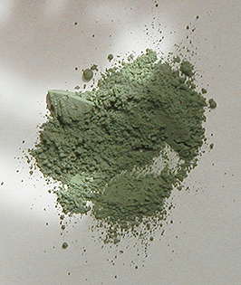

Les
verts complexes

L'oxyde
de chrome
Il s'agit d'un sesquioxyde de chrome (le vert émeraude
actuel a la même formule, mais hydratée).
Contrairement à ce dernier (traité
dans l'article sur les verts), il est très couvrant. Par contre, il est tout
aussi permanent. Il serait assez utilisé en peinture à
fresque.
Il a pu être confondu avec des verts créés à partir de jaune de chrome et
de bleus divers. Une chose le différencie : il n'est pas un mélange.
Sa très relative ressemblance avec la terre verte ne doit pas dissimuler une composition
chimique radicalement différente ni un caractère couvrant beaucoup plus
intense.
Lire l'article consacré à la famille des chromes.
La
terre verte ou terre de Vérone
Utilisée pendant l'Antiquité (au moins à l'époque romaine - elle n'est
semble-t-il pas consignée dans les archives des civilisations plus anciennes), elle serait
faite de
différents composés siliceux, soit d'une manière
générale des argiles associées à différents
métaux oxydés : le fer, le magnésium (magnésie),
le manganèse, etc. Merci
de nous communiquer toute information fiable et précise sur la composition
de terres
vertes véritables.
Le rôle de l'oxyde de fer est évoqué dans un
passage du chapitre XIX des
Dialogues de Dotapea.
La terre verte a une forte personnalité chromatique, associant
chaleur et froideur, pénombre et lumière sourde (voir photos ci-contre et
ci-dessous).
Provenance
Ses variétés sont nombreuses. Les plus réputées proviennent de Vérone
(d'où l'intitulé de terre de Vérone, dit "Brentonico"
- c'est de loin l'espèce la plus courante), de Bohème - voir
ci-dessous - et de Chypre. Toutes celles-là contiennent
du protoxyde de
manganèse. Les
Romains se seraient également servis de variétés de la région de Nice (France). Le géologue averti peut découvrir dans des zones plus
circonscrites en Europe ou ailleurs (jusqu'en Amérique) des variétés qui ont
été utilisées tant en décoration qu'en peinture artistique ou rituelle.
Intérêt porté à
cette couleur au cours de l'histoire
Bien que ce pigment semble avoir été boudé pendant la préhistoire, dans la Rome de
l'Antiquité, l'extraction et la préparation de la terre verte
étaient quand même parvenues à maturité. Il faut dire que les pigments verts
étaient rares (cf. introduction de l'article sur les verts)
et les besoins importants. La recherche s'était donc concentrée et
intensifiée sur
les rares variétés disponibles.
Rome s'est servie des différences entre les variétés pour constituer une palette
étonnement riche de verts. La terre verte est également signalée à Ajanta (Deccan,
Union Indienne, IIème siècle BC - VIIè AC), utilisée
avec le même talent qu'à Rome.

Le Moyen-âge occidental ignorera cette couleur trop subtile, sauf pour la
réalisation des travaux de fond (voir Comment
s'en servir ?). La Renaissance occidentale sera aussi la renaissance de
la terre verte, qui ne cessera plus d'intéresser les peintres. De nouveaux
verts sont apparus, aidant notre regard à se débarrasser de l'aspect
nécessaire, quasiment obligatoire, de la terre verte, au profit de sa beauté
intrinsèque et de son aptitude à rendre sensibles les plus subtiles
variantes de verts (voir plus
loin).
De nos jours, on trouve encore des terres vertes très variées. Comparer par
exemple la photo ci-contre et celle qui se trouve ci-dessus.
Leur point commun est un aspect toujours cendré, lunaire, qui est d'ailleurs
magnifié par la calcination (voir ci-dessous).
Comment se comporte-t-elle ?
Elle est un pigment très
permanent.
Au registre des défauts - ou plutôt des particularités -, elle est relativement peu couvrante et, selon certaines
sources, susceptible de provoquer des craquelures (peinture à l'huile). Nous n'avons
jamais constaté ce
genre d'accidents.
De même, l'accusation quelque peu excessive selon laquelle la terre verte
"rejetterait l'huile" nous semble totalement infondée, infirmée par
l'expérience (à moins qu'il s'agisse d'une variété très particulière ou
d'une contrefaçon). Enfin, elle n'est pas
particulièrement siccative (toujours en peinture à l'huile), contrairement à ce qu'annoncent certains auteurs (alors que d'autres affirment le
contraire), se fondant probablement sur la présence théorique d'oxyde de manganèse,
produit siccatif, dans ce pigment. La variété des provenances de la terre
verte peut expliquer
en partie les importants écarts entre les jugements des peintres.
Certains
auteurs mentionnent en effet une simple "petite quantité de manganèse"
dans la terre verte. Plus encore que sa composition, la transparence de ce pigment
peut expliquer certains écarts de jugements : elle induit un léger risque d'erreur au
moment du broyage dans certaines conditions. Mais ce type de propos discordants
n'est pas rare (voir Pigments dits
"douteux").
Comment
s'en servir ?
Elle est généralement sans grand intérêt en mélange massif, sinon avec le
blanc - en pâte ou en transparence. On la mêle surtout à d'autres pigments
introduits en petites quantités.
La terre verte est un élément important du verdaccio.
Chez les primitifs italiens, les carnations sont peintes sur une
ébauche très travaillée à base de terra verde et de blanc.
Aujourd'hui encore, ce procédé est utilisé par certains peintres. D'autres
lui préfèrent un fond uni, une imprimature qui
a effectivement tendance à magnifier les carnations.
Elle est souvent
utilisée, on l'a compris, pour les carnations, mais aussi pour les feuillages
ou tout autre type de travail supposant des variations de verts car elle donne
une base chromatique particulièrement intéressante que l'on pourrait
presque dire "adulte" ou estivale, pas tellement printanière,
aucunement acidulée - ce qui
donne encore plus d'impact aux interventions locales de teintes fraîches. Cette
base puissante peut être altérée par des ajouts très subtils d'autres
pigments, pratique typique lorsqu'il s'agit de traiter cette couleur dont l'oeil
humain repère par nature le maximum de variantes par rapport aux autres gammes
chromatiques.
En
glacis, elle est excellente avec l'huile ou
l'acrylique. A fresque également : elle ne réagit guère aux substances
alcalines des mortiers et plâtres. En décoration intérieure, elle est
intéressante d'autant plus qu'elle est assez peu coûteuse.
En patine
( à la cire notamment),
elle rend des services pour réaliser des imitations de vert-de-gris.
Terre
verte calcinée
Selon certains auteurs, calcinée (débarrassée de son eau par cuisson), la terre verte deviendrait plus brune
et jaunâtre ("terre verte brune") et donnerait de beaux gris, fort
permanents.
En fait, nous avons effectué cette classique expérience de calcination et
à la température maximale d'une plaque de cuisinière, le résultat n'a rien
de brunâtre ; il est à peine plus jaune. Comme on le voit sur l'image, il s'agit d'un gris-vert beau
comme une cendre lunaire.
Le pigment originel ayant servi à l'expérience dont on voit le résultat
ici est celui qui apparaît sur l'image située plus haut.
Les imitations
Nous signalons l'existence d'imitations de la terre
verte, y compris dans
certaines gammes extra-fines ! Exemple : oxyde de fer jaune + noir d'ivoire +
chlorate de phtalocyanine de cuivre. Guère plus permanente que l'original, cette imitation a
l'avantage - ou l'inconvénient - d'être nettement plus couvrante. La couleur est superbement rendue.
La teinte de la terre verte naturelle est répertoriée dans la nomenclature pigmentaire
internationale (Colour Index) sous l'intitulé PG23. Sur un pot de pigment ou un
tube, l'absence de cette référence et la présence de plusieurs autres ("PYxx,
PBkxx") signalent toujours une imitation.
Terre
de Bohème
On signale une terre de Bohème de couleur verte, proche de la terre verte
véronaise mais plus pâle. Nous en ignorons la composition. Toute information
à son sujet sera la bienvenue.
Toxicité
Elle est faible, mais il faut faire attention au manganèse qu'elle peut
contenir en quantité variable selon sa provenance. Sous forme pulvérulente
uniquement, il existerait un danger d'intoxication. L'inhalation répétée
(quotidienne) est à éviter, comme
avec les terres d'ombre. L'exposition est
maximale lors des dizaines de secondes qui suivent l'ouverture des pots. Couvrir
les pots d'un plastique transparent lors de cette opération n'est pas une
précaution inutile pour l'utilisateur régulier.
Vert de cobalt
Il s'agit tantôt d'un titanate de cobalt
(ci-contre), tantôt d'une combinaison zinc/cobalt.
Nous le connaissons fort mal. Comportant du cobalt, il implique peut-être les mêmes
précautions pour la peinture à l'huile que le bleu de
cobalt (information non confirmée). Il est réputé permanent. Sa couleur est peu franche ; elle paraît
même assez impure, emprunte de bleu et de gris. Les imitations sont courantes étant donné le prix du
cobalt.
Xavier de Langlais écrit au sujet de la version au zinc : "Très stable dans
tous les mélanges, siccativité moyenne", ce qui a de quoi surprendre. Il est possible que nous soyons en effet en présence d'un sel
très solide qui n'aurait pas la "siccativité" du bleu de cobalt ou du céruléum,
mais nous ne saurions l'affirmer pour le moment.
Il faut en effet souligner le fait que cette couleur, très présente dans les
gammes de peintures acryliques, est pratiquement absente des peintures à
l'huile.
Lire l'article consacré à la famille des cobalts.
Vert
céladon
C'est une sorte d'arlésienne : tout le monde en parle - et les experts en
marketing en abusent quelque peu de nos jours - mais personne n'en voit... la
couleur, un comble ! Le véritable céladon est, à notre connaissance, assez
peu courant voire indisponible en France, même chez les fournisseurs les mieux
approvisionnés. Certains professionnels le produisent eux-mêmes.
Il faut dire qu'il ne s'agit pas à proprement parler d'une couleur
pigmentaire. Il s'agit avant tout d'un "oxyde"
destiné aux arts du feu.
Son origine est extrême-orientale. La Chine
maîtrisa progressivement la fabrication de glaçures au céladon. Les premières
réalisations dateraient du IIIème siècle AC, à Yue, Province de Zhejiang.
D'abord craquelées, elles devinrent si parfaites vers le XIème
siècle que les poteries s'exportèrent, suivies des potiers eux-mêmes (lire
un intéressant article de Dauphine Scalbert sur
Eurocéramique.com).
Fort étrangement, le principal élément colorant du
céladon - pourtant d'un bleu-vert légèrement "rompu" et clair - serait le
fer, cuit "en réduction".
Cependant, une telle glaçure ne se réduit pas à un seul élément et il y a de
fortes chances pour que la composition mise en oeuvre dans les ateliers
impériaux fasse intervenir d'autres composants s'associant chimiquement lors
d'une cuisson contrôlée aussi rigoureusement qu'il est possible de
l'imaginer.
Sur le rôle du fer dans la terre verte et le céladon,
lire un passage du chapitre XIX des Dialogues de Dotapea.
L'étymologie poétique du terme occidental "céladon" est tirée du nom de l'un des personnages du roman pastoral du XVIIème
siècle "L'Astrée", ouvrage à la mode antique (l'action se situe
dans la Gaule du Vème
siècle). Il s'agit d'un succès littéraire de l'époque signé par Honoré Durfé
et comptant rien moins que cinq mille pages. A
la question : "mais quel peut bien être le rapport entre le beau pâtre de
l'époque druidique, imaginé par un romancier vivant douze siècles plus tard,
et les glaçures asiatiques du premier millénaire AC ?", on répondra
qu'un ruban vert, arboré par la belle Astrée et arraché fortuitement par
le beau Céladon, fut ensuite porté par celui-ci lors des innombrables aventures de
ce héros imaginaire. Une association a posteriori, purement poétique, liée à
un publication littéraire en vogue.
L'utilisation pigmentaire du céladon pose
d'autre questions. Des céramiques glacées au céladon auraient côtoyé des
cargaisons de smalt sur les jonques
chinoises de l'époque Yuan. Aussi est-il permis de se demander si un
"pigment céladon" a pu être réalisé sous la forme d'un genre de
fritte broyée, à l'instar du smalt, ça et là, sur
le continent eurasien. La question reste posée. Merci
de nous communiquer toute information à ce sujet.
Lecture conseillée :
Le
céladon sur Pourpre.com
Retour
début de page